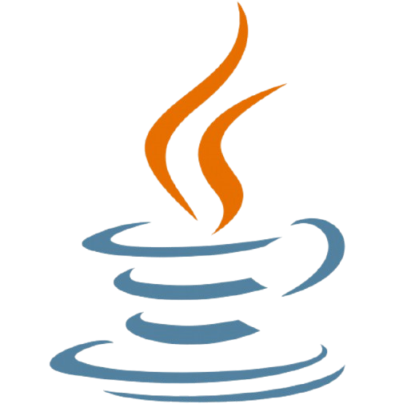
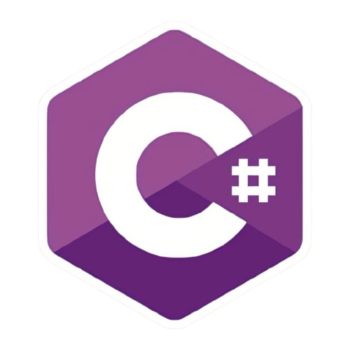
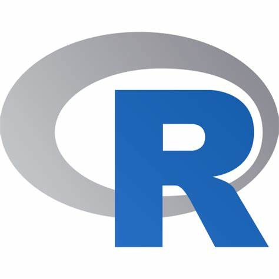

Você ira aprender:
Python

Python é uma linguagem de programação de alto nível, fácil de aprender e de sintaxe clara. Ela é amplamente utilizada em diversas áreas, como desenvolvimento web, análise de dados, inteligência artificial e automação. Seu vasto ecossistema de bibliotecas torna-a extremamente versátil e popular entre desenvolvedores.
Java

Java é uma linguagem de programação orientada a objetos, amplamente utilizada para o desenvolvimento de aplicações web, móveis e sistemas corporativos. Sua característica de "escreva uma vez, execute em qualquer lugar" se deve à sua execução na Java Virtual Machine (JVM). É conhecida pela sua robustez, escalabilidade e segurança.
C#

C# é uma linguagem de programação moderna, orientada a objetos, desenvolvida pela Microsoft. É amplamente usada no desenvolvimento de aplicações para a plataforma .NET, incluindo aplicativos desktop, web e jogos com Unity. Sua sintaxe é similar ao Java, oferecendo recursos como tipagem forte, LINQ e suporte a programação assíncrona.
R

R é uma linguagem de programação voltada para análise estatística e computação gráfica. É amplamente utilizada por estatísticos e cientistas de dados para manipulação de dados, modelagem estatística e visualização de resultados. Possui um vasto conjunto de pacotes que a tornam ideal para pesquisa e projetos de dados complexos.